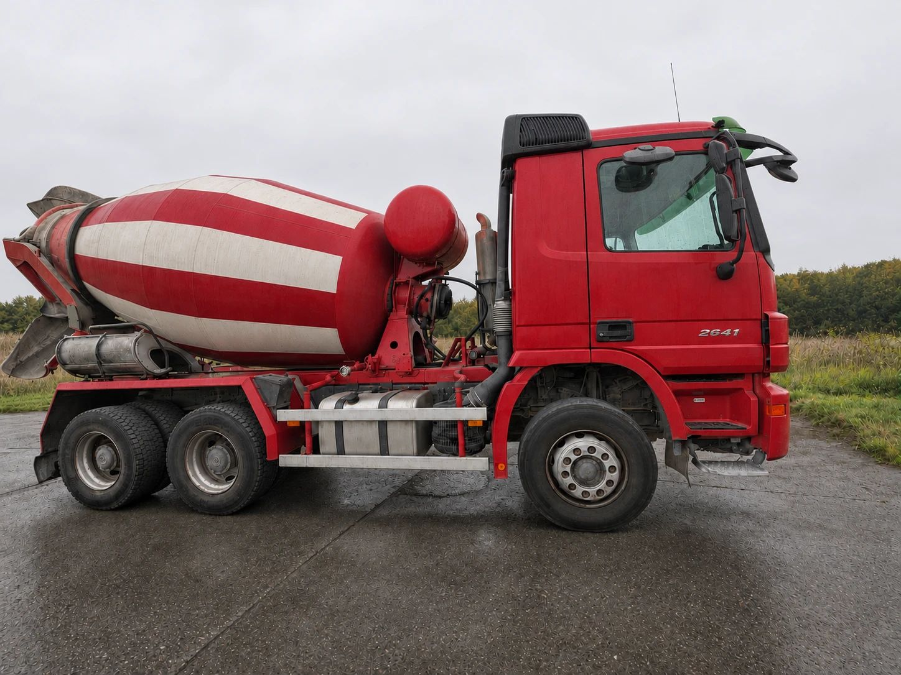
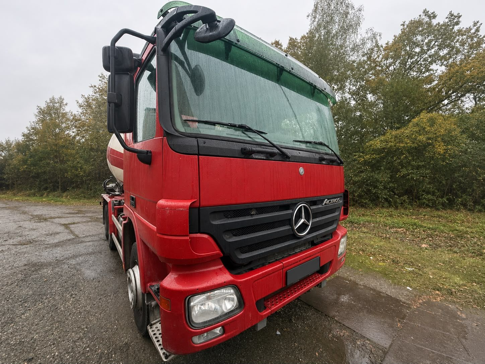

Ein Betonmischer-LKW ist auf jeder Baustelle zu sehen, auf der betoniert wird. Er holt den fertigen Beton im Werk ab und hält ihn auf der Fahrt mit der drehenden Trommel in Bewegung, damit er nicht entmischt und nicht zu früh erstarrt. Fachleute sagen Fahrmischer oder Transportbetonmischer, auf der Baustelle heißt er oft einfach Mischer.
Wer einen gebrauchten Betonmischer kaufen oder verkaufen will, stellt sich meist dieselben Fragen: Wie viel Beton passt hinein, was wiegt das Fahrzeug und worauf kommt es bei der Bewertung an? Die Antworten haben wir hier zusammengefasst.
Wie funktioniert ein Fahrmischer?
Auf dem LKW-Fahrgestell sitzt eine schräg gelagerte Trommel mit innen angeschweißten Mischwendeln. Dreht die Trommel in die eine Richtung, wird der Beton nach innen gefördert und in Bewegung gehalten. Dreht sie in die Gegenrichtung, fördern die Wendeln den Beton nach außen, und er läuft über die Schurre, eine schwenkbare Rinne am Heck, in die Schalung, den Kübel oder die Betonpumpe.
Angetrieben wird die Trommel meist hydraulisch über einen Nebenabtrieb vom LKW-Motor. Es gibt auch Mischer mit eigenem Antriebsmotor und neuere Modelle mit elektrischem Trommelantrieb.
Beton ist ein Produkt mit Ablaufdatum: Nach der Anwendungsregel DIN 1045-2 soll ein Fahrmischer den Beton spätestens 90 Minuten nach der ersten Wasserzugabe vollständig entladen haben. Bei Hitze oder Kälte verschiebt sich das. Deshalb fahren Mischer meist im Umkreis ihres Betonwerks.
Betonmischer-LKW: Wie viel m³ passen hinein?
Mischer werden nach ihrem Nennvolumen bezeichnet, also der Menge Beton, die sie mischen und transportieren dürfen. Gängig sind 7 bis 10 m³, größere Trommeln gibt es vor allem für Sattelmischer.
Das geometrische Volumen der Trommel ist deutlich größer. Eine Trommel für 9 m³ fasst geometrisch oft weit über 15 m³. Der Leerraum ist nötig, weil der Beton sonst beim Mischen und bergauf herausschwappen würde.
Wie viel Beton ein Mischer tatsächlich laden darf, entscheidet aber nicht die Trommel, sondern das Gewicht. Ein Kubikmeter frischer Normalbeton wiegt rund 2,4 Tonnen. Eine einfache Rechnung zeigt das Problem:
- Ein vierachsiger Mischer darf in Deutschland 32 Tonnen wiegen.
- Leer bringt er je nach Fahrgestell und Aufbau oft 12 bis 13 Tonnen auf die Waage.
- Damit bleiben knapp 20 Tonnen Zuladung, also etwa 8 m³ Beton.
Deshalb kann ein Mischer mit 9-m³-Trommel auf deutschen Straßen oft nicht voll beladen fahren. Jedes Kilo, das der Aufbau leichter ist, wird zu Nutzlast. Hersteller werben deshalb mit Leichtbau, etwa mit dünnwandigen Trommeln aus verschleißfestem Stahl.
Was wiegt ein Betonmischer-LKW?
Für das zulässige Gesamtgewicht gelten in Deutschland die Grenzen der StVZO für LKW:
- Zwei Achsen: 18 Tonnen
- Drei Achsen: bis 26 Tonnen, je nach Ausführung der Achsen
- Vier Achsen: 32 Tonnen
Der vierachsige Mischer mit 8x4-Fahrgestell ist in Deutschland die häufigste Bauart, weil er das beste Verhältnis von Nutzlast und Wendigkeit bietet. Dreiachser sind leichter und wendiger, laden aber weniger. Fünfachsige Mischer, wie sie in anderen Ländern verbreitet sind, bringen hierzulande wegen der Gewichtsgrenze kaum Vorteile.
Bei den Maßen liegt ein vierachsiger Mischer meist bei rund 10 Metern Länge, 2,55 Metern Breite und knapp 4 Metern Höhe. Die genauen Werte hängen von Fahrgestell, Radstand und Trommel ab und stehen im Datenblatt des Aufbaus.
Welche Varianten gibt es?
- Fahrmischer: der klassische Betonmischer auf LKW-Fahrgestell.
- Fahrmischer mit Förderband: Ein Förderband am Heck bringt den Beton einige Meter weit, etwa über eine Böschung oder in eine Baugrube.
- Pumpen-Fahrmischer: Ein Mischer mit eigener Betonpumpe und kurzem Mast. Er spart bei kleineren Baustellen die separate Pumpe. Wer nach einem Betonmischer-LKW mit Pumpe sucht, meint dieses Fahrzeug. Mehr zu Pumpen in unserem Beitrag Betonpumpe kaufen oder verkaufen.
- Sattelmischer: Eine Mischtrommel auf einem Sattelauflieger für große Mengen auf langen Strecken.
- Mischer auf Allrad-Fahrgestell: für Baustellen abseits befestigter Wege.
Hersteller und Fahrgestelle
Die Mischaufbauten kommen in Deutschland häufig von Liebherr und Schwing Stetter, dazu von Herstellern wie CIFA und Euromix MTP. Die Fahrgestelle stammen von allen großen LKW-Herstellern, besonders oft von Mercedes-Benz, MAN, Volvo und Scania. Bei Mercedes-Benz sind es heute meist Fahrgestelle der Baureihe Arocs, die Unterschiede zum Actros erklärt unser Beitrag Arocs oder Actros?.

Ist ein Betonmischer mautpflichtig?
Ja. Anders als eine Betonpumpe transportiert ein Fahrmischer Güter, nämlich Beton. Er ist deshalb wie jeder andere LKW über 3,5 Tonnen mautpflichtig. Die Höhe der Maut hängt unter anderem von der Euro-Norm und der CO2-Klasse ab. Für gewerbliche Käufer in Deutschland ist das ein wichtiger Kostenpunkt und beeinflusst den Wert älterer Mischer.
Betonmischer gebraucht kaufen: Darauf sollten Sie achten
- Nennvolumen und Leergewicht. Rechnen Sie aus, wie viel Beton Sie mit diesem Fahrzeug tatsächlich laden dürfen.
- Trommel von innen ansehen. Anhaftungen von altem Beton wiegen viel und kosten Nutzlast. Die Mischwendeln verschleißen mit jeder Fahrt.
- Betriebsstunden des Aufbaus. Viele Mischer haben einen eigenen Stundenzähler für die Trommel.
- Hydraulik und Antrieb. Lassen Sie die Trommel in beide Richtungen laufen, auch unter Last, wenn möglich.
- Wasseranlage und Schurre. Zum Mischer gehört ein Wassertank zum Reinigen. Er sollte dicht sein, die Schurre sollte sich frei schwenken lassen.
- Fahrgestell. Achskonfiguration, Euro-Norm, Getriebe und die Belastung durch den Baustelleneinsatz.
- Unterlagen. Datenblatt des Aufbaus, Wartungsnachweise und, falls vorhanden, Rechnungen über getauschte Teile.
Gebrauchte Nutzfahrzeuge aus unserem Bestand finden Sie unter Fahrzeuge, Baufahrzeuge im Verkauf auf der Seite Baumaschinenhandel.
Betonmischer verkaufen: Diese Angaben braucht ein Ankäufer
Wenn Sie Ihren Betonmischer verkaufen möchten, beschleunigen diese Angaben das Angebot:
- Hersteller, Nennvolumen und Baujahr des Mischaufbaus
- Fahrgestell mit Hersteller, Modell, Erstzulassung, Achsen und Euro-Norm
- Kilometerstand und, falls vorhanden, die Betriebsstunden der Trommel
- Leergewicht laut Fahrzeugschein
- Sonderausstattung wie Förderband, Pumpe oder Allradantrieb
- Fotos: Fahrzeug von allen Seiten, Trommel, Schurre, Einfülltrichter, Innenraum, Kilometerstand und Typenschild des Aufbaus
- Standort des Fahrzeugs
Wie ein Verkauf rechtlich sauber abläuft, steht in unserem Beitrag Nutzfahrzeug verkaufen: Was Sie beachten müssen.
Was ist ein gebrauchter Betonmischer wert? Oft weniger, als Verkäufer erwarten
- Der Einsatz ist hart. Beton ist schwer und schleifend, Baustellen sind staubig und uneben. Käufer rechnen deshalb vorsichtig.
- Das Angebot ist groß. Transportbetonwerke erneuern ihre Flotten regelmäßig, deshalb stehen oft viele ähnliche Mischer zum Verkauf.
- Die Maut kostet. Ältere Euro-Normen zahlen je Kilometer mehr, was den Kreis der Käufer im Inland kleiner macht.
- Nutzlast entscheidet. Ein schwerer Mischer lädt weniger Beton und ist für Betonwerke weniger wirtschaftlich.
- Inseratspreise sind Wunschpreise. Was in Börsen steht, ist noch nicht verkauft.
- Ein Händler hat Kosten. Abholung, Standzeit, Reinigung, Papiere und das Verkaufsrisiko müssen aus der Differenz gedeckt werden.
Für viele gebrauchte Mischer gibt es dafür Käufer im Ausland, wo Gewichtsgrenzen und Mautsätze anders sind. Den Weg dorthin übernimmt in der Regel ein Händler mit Erfahrung im Export.
Betonmischer verkaufen an die ECS GmbH
Wir kaufen Betonmischer und Betonpumpen ebenso an wie Kipper, Baustellen-LKW und andere Baufahrzeuge, vom einzelnen Fahrzeug bis zur ganzen Flotte. Unser Sitz ist Gehrden bei Hannover, angekauft wird in ganz Deutschland.
- Über 30 Jahre Erfahrung im Fahrzeughandel und ein Netzwerk von über 250 Partnern
- Wir kaufen selbst an: Ihr Vertragspartner ist die ECS GmbH
- Angebot in den meisten Fällen noch am selben Tag, wenn Daten und Fotos vorliegen
- Abholung an Ihrem Standort
- Auch für den Export: Um Ausfuhrpapiere, Verzollung und Transport kümmern wir uns
Mehr zum Ankauf von Baufahrzeugen steht auf der Seite Bau- und Kommunalfahrzeuge verkaufen, für mehrere Fahrzeuge auf einmal auf der Seite Fuhrpark verkaufen.
Möchten Sie wissen, was wir für Ihren Betonmischer anbieten? Schicken Sie uns die Daten über die Kontaktseite.
Hinweis: Dieser Beitrag dient der allgemeinen Information und ersetzt keine Rechts- oder Steuerberatung. Alle Angaben ohne Gewähr, Stand: 17. November 2026. Genannte Marken und Modellbezeichnungen gehören ihren jeweiligen Inhabern. Die ECS GmbH ist ein unabhängiger Händler und steht in keiner Verbindung zu den Herstellern.